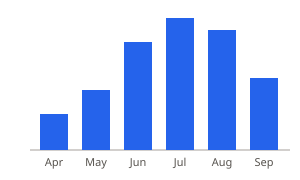

<canvas>
Hover a bar: the script works out which one.
Pixels. Scale it up and it blurs unless you redraw. Hover needs your own hit testing. Colors are read once at draw time.
Screen reader: the fallback table inside <canvas>
Hover a bar: the script works out which one.
Pixels. Scale it up and it blurs unless you redraw. Hover needs your own hit testing. Colors are read once at draw time.
Screen reader: the fallback table inside <canvas>
Elements. Stays sharp at any size. Each bar is a DOM element: CSS :hover and the page’s colors just work.
Screen reader: “Hikers per month on North Ridge, image” plus the description

A picture of a document. Sharp at any size, but sealed: no page CSS, no events, no scripts inside.
Screen reader: the alt text